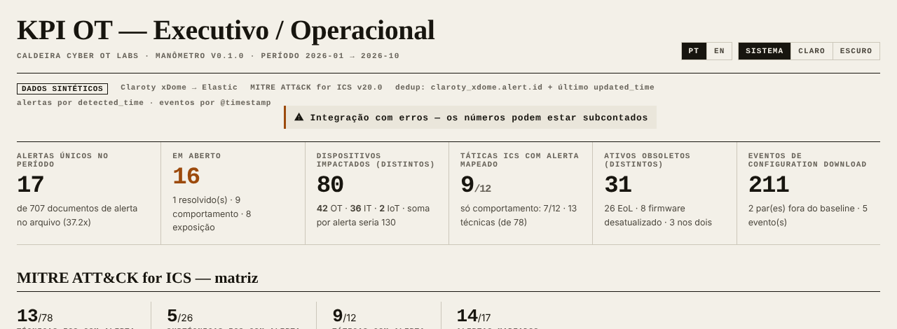
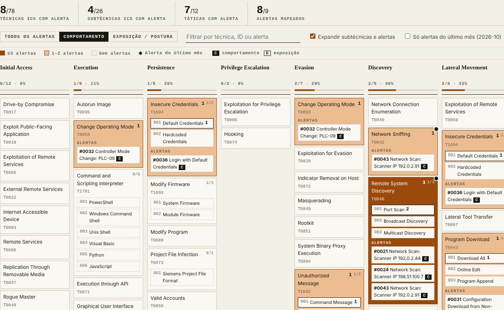
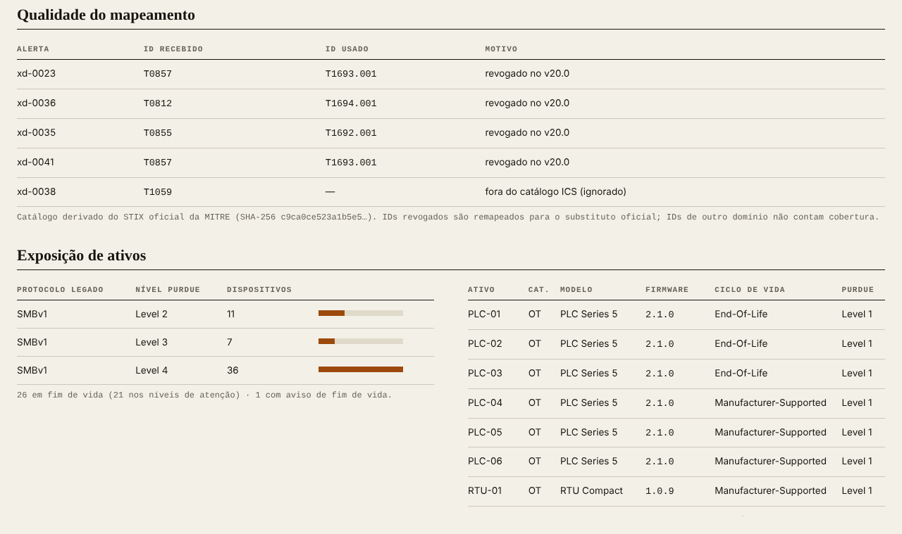
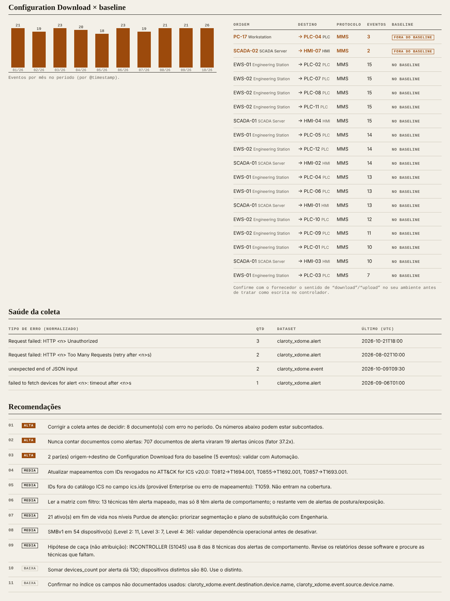
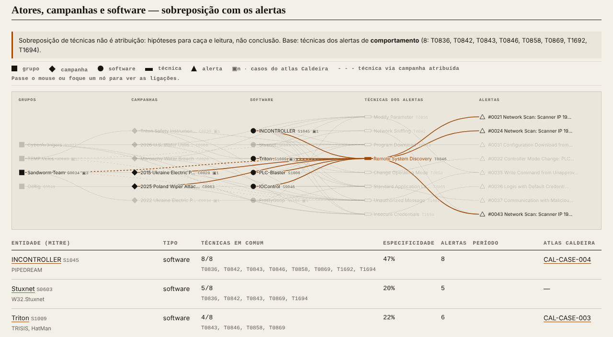
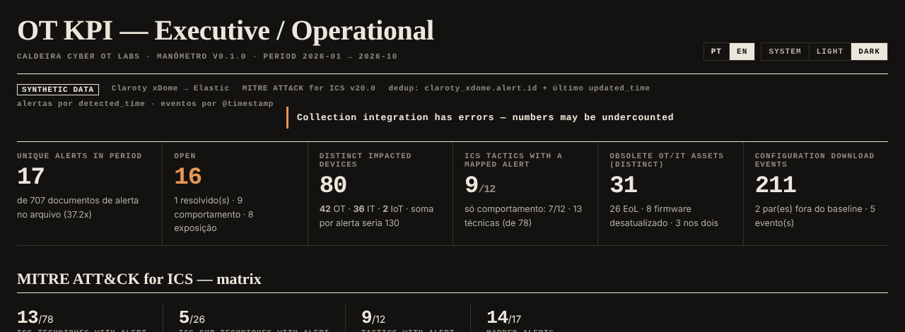

Medir a pressão antes de abrir a válvula.
O MANÔMETRO transforma uma exportação de documentos da integração Claroty xDome → Elastic em KPIs de OT que dá para defender numa reunião: alertas deduplicados, matriz MITRE ATT&CK for ICS v20.0 separando comportamento de exposição, ativos obsoletos, Configuration Download contra baseline e saúde da coleta. Tudo offline, só com Python.
"synthetic": true. Ela nunca se conecta ao Elastic, à API do fornecedor nem a ativos OT.01O que é — e o que não é
É
- Um calculador offline de KPIs sobre documentos exportados.
- Um verificador de honestidade: aponta inflação por re-coleta, IDs ATT&CK revogados, IDs de outro domínio e erros de coleta.
- Um gerador de relatório HTML autocontido (abre sem internet) e de um envelope JSON selado com SHA-256.
Não é
- Um SIEM, conector ou coletor. Não abre sockets.
- Um detector de ataques: o mapeamento ATT&CK vem do fornecedor e não prova execução.
- Uma ferramenta para decisões automáticas em processo físico.
02Como funciona
Seis etapas, sempre na mesma ordem. Cada uma reduz um tipo de erro de medição.
Jornada de quem lê o relatório
03Instalação, passo a passo
Você só precisa de Python 3.10 ou mais novo. Não há pacotes para instalar.
- Abra python.org/downloads, baixe o instalador do Python 3 e, na primeira tela, marque “Add python.exe to PATH”. Clique em Install Now.
- No GitHub do repositório, clique em Code → Download ZIP e extraia a pasta (botão direito → Extrair tudo).
- Abra a pasta extraída, depois
manometro\lancadores. - Dê dois cliques em
gerar-relatorio-demo-windows.bat. Se o SmartScreen avisar, clique em Mais informações → Executar assim mesmo (o arquivo é texto; abra no Bloco de Notas para conferir antes). - O navegador abre o relatório. Pronto.
- Abra o Terminal e digite python3 --version. Se aparecer 3.10 ou mais, pule para o passo 3.
- Se não houver Python, instale pelo python.org/downloads (pacote .pkg) e repita o passo 1.
- No GitHub do repositório, Code → Download ZIP; dê dois cliques no ZIP para extrair.
- Em
manometro/lancadores, clique com o botão direito emgerar-relatorio-demo-macos.command→ Abrir → Abrir (só na primeira vez, por causa do Gatekeeper). - Se aparecer “permissão negada”, no Terminal rode chmod +x no arquivo e tente de novo.
- Confira: python3 --version (Debian/Ubuntu já trazem; se não, sudo apt install python3).
- Clone: git clone https://github.com/Ridd1kulusC0d3r/CaldeiraCyberOT (ou baixe o ZIP).
- No gerenciador de arquivos, dê dois cliques em
manometro/lancadores/gerar-relatorio-demo-linux.she escolha Executar. Ou, no terminal: sh manometro/lancadores/gerar-relatorio-demo-linux.sh. - O relatório fica em
saida/manometro-demo.htmle abre comxdg-open.
04Primeiro uso guiado — uma ação por vez
Marque cada caixa quando terminar. Só passe para a próxima depois.
05Tour do relatório
Topo: saúde, selo e cards

12345678- 1Título e período analisado (AAAA-MM → AAAA-MM).
- 2Idioma PT/EN e tema Sistema/Claro/Escuro (lembrados no navegador).
- 3Selo de dados sintéticos e chips de método: dedup, versão do ATT&CK, campos de data.
- 4Banner de saúde da coleta. Clique para ir à tabela de erros.
- 5Alertas únicos no período, com o total de documentos e o fator de inflação.
- 6Dispositivos distintos por uid, por categoria, e quanto daria somando por alerta.
- 7Táticas com alerta mapeado e, abaixo, só de comportamento.
- 8Eventos de Configuration Download e pares fora do baseline.
Matriz ATT&CK for ICS

123456- 1Totais da matriz. Mudam quando você troca o filtro.
- 2Filtro de natureza: Todos, Comportamento, Exposição/postura.
- 3Busca por técnica, ID (ex.:
T0846) ou nome do alerta. - 4Expandir subtécnicas e alertas; mostrar só os do último mês.
- 5Cabeçalho da tática: técnicas com alerta / total.
- 6Técnica com alertas: cor por quantidade, subtécnicas e lista de alertas com selo C (comportamento) ou E (exposição).
Qualidade do mapeamento e exposição de ativos

123- 1ID que o fornecedor mandou, ID usado e motivo (revogado no v20.0 ou fora do ICS).
- 2Protocolo legado (SMBv1) por nível Purdue.
- 3Ativos obsoletos distintos: fim de vida e/ou firmware desatualizado.
Configuration Download, saúde e recomendações

1234- 1Eventos de Configuration Download por mês.
- 2Pares origem → destino; os fora do baseline vêm primeiro, em vermelho.
- 3Erros de coleta normalizados (números e IDs viram <n>/<id>).
- 4Recomendações ordenadas por prioridade, geradas a partir dos números.
Atores, campanhas e software

12345- 1Aviso fixo: sobreposição de técnicas não é atribuição. Mostra quais técnicas formam a base.
- 2Legenda por forma: quadrado = grupo, losango = campanha, círculo = software, barra = técnica, triângulo = alerta.
- 3Passe o mouse (ou use Tab) num nó: as ligações acendem e o resto apaga.
- 4Linha tracejada: técnica que o grupo herda de uma campanha atribuída a ele pela MITRE.
▣n= casos do atlas Caldeira. - 5Ranking: técnicas em comum, especificidade, alertas ligados e link para o caso do atlas.
Tema escuro e inglês

06Gerando relatórios
python3 -m manometro analisar manometro/fixtures/demo-xdome.json \
--de 2026-01 --ate 2026-10 \
--json saida/manometro.json --html saida/manometro.html
| Opção | O que faz |
|---|---|
--de / --ate | Período em meses (AAAA-MM), inclusivo. Sem elas: do primeiro ao último mês com dados (no demo, 2025-11 → 2026-10). |
--json | Grava o envelope selado (payload + digest SHA-256). |
--html | Gera o relatório estático a partir do mesmo payload. |
--graphml | Exporta o grafo atores → campanhas → software → técnicas → alertas em GraphML, para abrir no Gephi, yEd, Maltego ou importar no Neo4j. |
verificar ARQ.json | Recalcula o digest. ÍNTEGRO ou ALTERADO. Integridade não é autoria. |
Para recriar o caso demo: python3 -m manometro.gerar_demo. Para atualizar o catálogo quando sair outra versão do ATT&CK: baixe o ics-attack-XX.json oficial e rode python3 -m manometro.matriz caminho/ics-attack-XX.json.
07Dicionário de KPIs — e a armadilha de cada um
| KPI | Como é calculado | Armadilha que evita |
|---|---|---|
| Alertas únicos | Grupos por claroty_xdome.alert.id; vale o estado do maior updated_time. | Contar re-coletas e o fan-out por dispositivo como alertas. |
| Em aberto | Status vigente fora de status_resolvido da política. | Ler o status de uma coleta antiga. |
| Dispositivos distintos | União de device.uid dos snapshots vigentes. | Somar devices_count de cada alerta (no demo: 130 × 80 reais). |
| Técnicas / táticas com alerta | IDs normalizados para v20.0; subtécnica credita a técnica-mãe; técnica conta em todas as táticas a que pertence. | Chamar de “táticas atingidas” algo que é mapeamento de fornecedor. |
| Só comportamento | Exclui alertas cuja categoria está em categorias_exposicao (padrão: Risk). | Firmware antigo ou certificado vencido parecerem adversário na matriz. |
| Ativos obsoletos | União de EoL (end_of.life.state) e firmware desatualizado (tipo de alerta). | Somar as duas listas e contar duas vezes quem está nas duas. |
| Configuration Download | Eventos do tipo na política, agrupados origem → destino e comparados com baseline_config. | Validar baseline “de olho”; confundir download com upload. |
| Sobreposição com atores e campanhas | Técnicas dos alertas de comportamento (no nível da técnica-mãe) comparadas com as relações uses de cada grupo, campanha e software do ATT&CK for ICS v20.0; grupos herdam as técnicas das campanhas atribuídas a eles. Ordena por técnicas em comum e especificidade. | Ler sobreposição como atribuição; deixar ferramentas amplas (INCONTROLLER) parecerem “o culpado”. |
| Saúde da coleta | Documentos com error.message no período, por tipo normalizado. | Painel bonito sobre integração quebrada. |
08Arquitetura e legenda
| Símbolo no relatório | Significado |
|---|---|
| Célula laranja forte | ≥ 3 alertas mapeados na técnica. |
| Célula laranja clara | 1–2 alertas. |
| Borda verde-água | Há alerta do último mês do período. |
| C / E | Alerta de comportamento / de exposição (postura). |
| Linha vermelha | Par de Configuration Download fora do baseline. |
09Solução de problemas
“Python 3.10+ não encontrado”
Instale pelo python.org. No Windows, reinstale marcando “Add python.exe to PATH”. Teste com python --version ou py -3 --version.
“Apenas exportações explicitamente marcadas como sintéticas são aceitas”
É a trava do repositório público. Use o caso demo ou gere outro sintético com gerar_demo.py. Dados reais pertencem a uma cópia privada, sob a política de dados da sua organização.
“--de deve estar no formato AAAA-MM” ou “Período inválido”
Use meses com dois dígitos (2026-01) e o início antes do fim.
No macOS: “não pode ser aberto porque é de um desenvolvedor não identificado”
Botão direito no .command → Abrir → Abrir. Só na primeira vez.
O relatório abriu sem cores/filtros
O HTML usa um pequeno script embutido. Abra num navegador atual (Chrome, Edge, Firefox, Safari). Visualizadores de pré-visualização de e-mail podem bloquear scripts.
Meu índice usa outros nomes de campo
Edite só manometro/campos.py. Os campos marcados "suposto" não estão na referência pública da integração e o relatório os lista no rodapé.
“verificar” diz ALTERADO
O payload do JSON foi modificado depois de gerado (até um espaço dentro de um valor muda o digest). Gere de novo a partir da exportação.
10Glossário
- OT / ICS
- Tecnologia operacional / sistemas de controle industrial: PLCs, RTUs, HMIs, SCADA.
- Re-coleta
- Nova consulta da integração à API, que grava outra vez o estado do alerta.
- Fan-out
- Um documento por dispositivo afetado; um alerta com 30 dispositivos gera 30 documentos por coleta.
- Deduplicação
- Agrupar documentos do mesmo alerta e manter só o estado vigente.
- ATT&CK for ICS
- Taxonomia da MITRE de comportamentos adversários em ambientes industriais. v20.0: 12 táticas, 78 técnicas, 26 subtécnicas.
- ID revogado
- Técnica substituída por outra numa versão nova (ex.: T0855 → T1692.001 no v20.0).
- Comportamento × exposição
- Algo que alguém fez (scan, escrita) × uma condição do ambiente (firmware velho, SMBv1).
- Purdue
- Modelo didático de níveis (0 a 5) de uma arquitetura industrial.
- EoL
- End of Life: fora do suporte do fabricante.
- Baseline
- Lista declarada do que é esperado (aqui: quem pode fazer Configuration Download para quem).
- Grupo / campanha / software
- Entidades do ATT&CK: quem (G), qual operação documentada (C) e qual ferramenta (S).
- Sobreposição
- Técnicas em comum entre seus alertas e o repertório documentado de uma entidade. Hipótese, não atribuição.
- Especificidade
- Quanto do repertório da entidade aparece nos seus alertas. Alta especificidade com poucas técnicas pesa mais que muitas técnicas genéricas.
- GraphML
- Formato aberto de grafo em XML, lido por Gephi, yEd, Maltego e Neo4j.
- SHA-256 / digest
- Impressão digital do payload. Detecta alteração; não prova quem gerou.
11Seção técnica e resultado dos testes
Garantias
- Biblioteca padrão do Python apenas; nenhum
socket,urllibou subprocesso. - Catálogo e grafo ATT&CK derivados do STIX oficial
ics-attack-20.0.json(SHA-256c9ca0ce5…1e1183): 12 táticas, 78 técnicas, 26 subtécnicas, 14 grupos, 10 campanhas, 25 softwares; contagens conferidas em teste. - Resultado determinístico: mesma exportação + mesmo período = mesmo digest.
- Entrada nunca é alterada (teste dedicado).
Resultado dos testes
32 testes (9 do núcleo + 23 do Manômetro), executados em workspace Linux na nuvem em 23/10/2026, Python 3.13 e 3.11: todos passaram. Detalhes em RELATORIO-TESTES.md. O GitHub Actions repete a bateria a cada push.
python3 -m unittest discover -s tests -v
Limites conhecidos: valores de category/status do fornecedor variam por ambiente e ficam na política; o sentido de “download/upload” deve ser confirmado com o fornecedor; dois campos de nome de dispositivo em eventos são supostos.